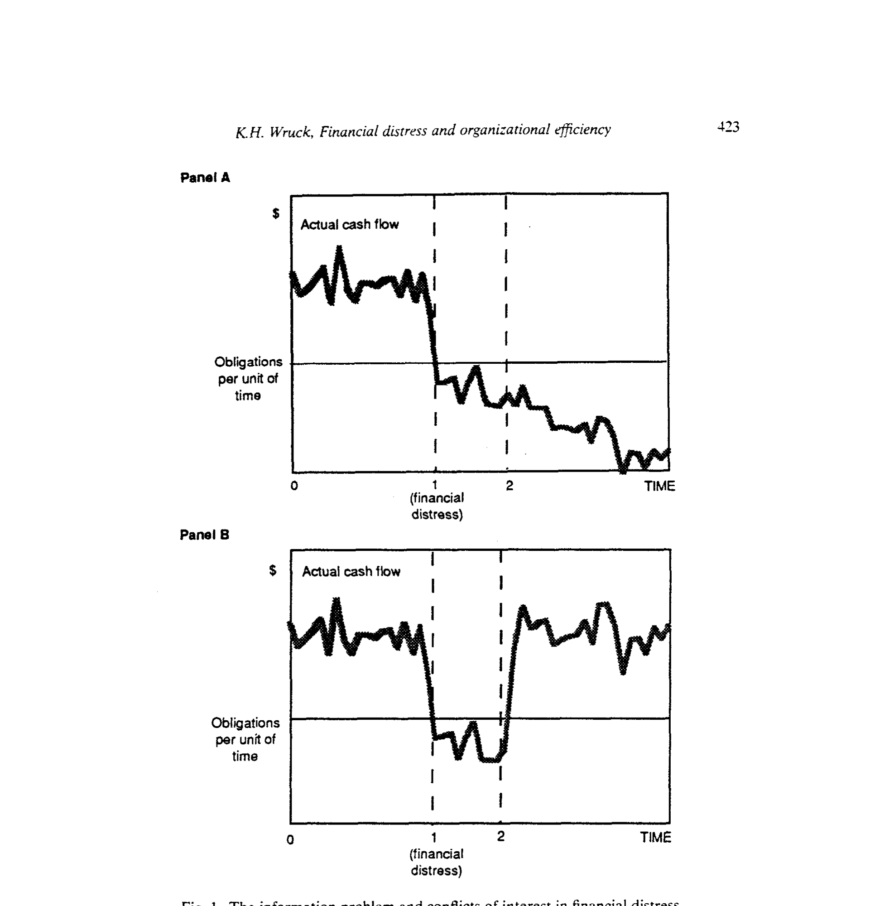
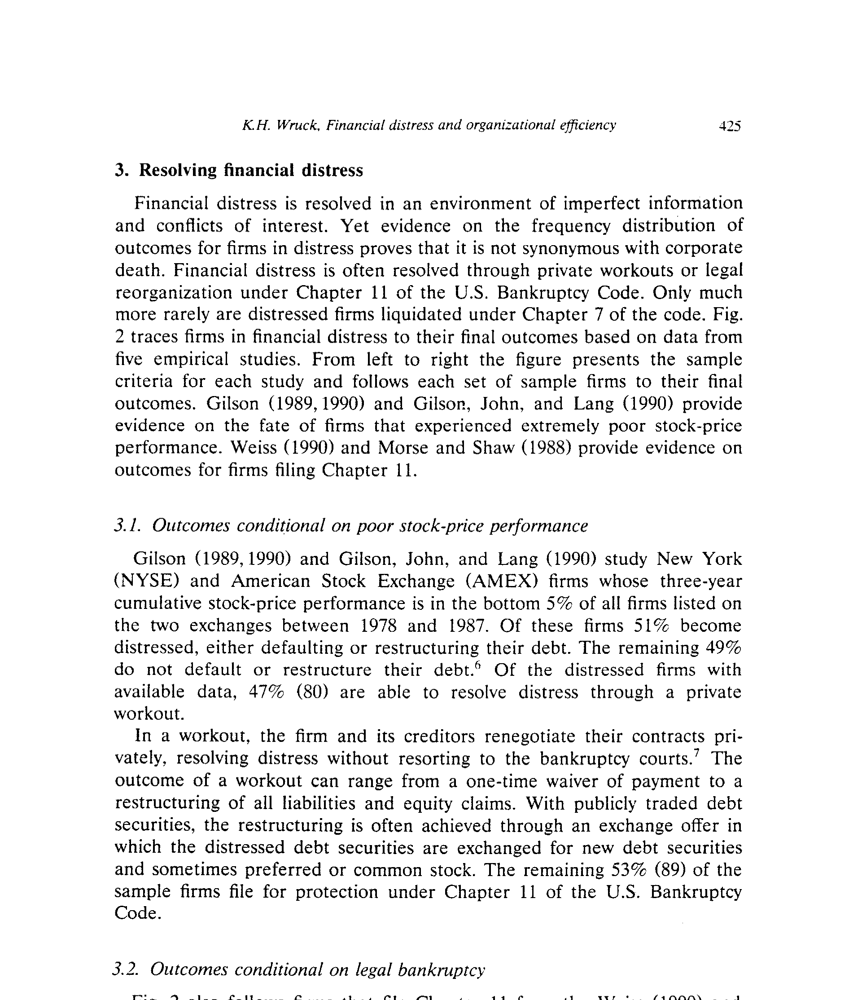
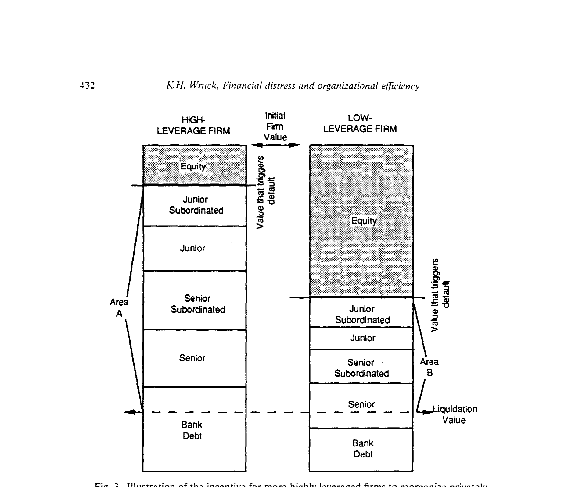
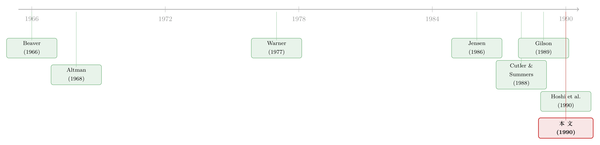

债，不只是用来还的——它逼着一家公司重新想清楚自己该怎么活
本文读的是 Wruck (1990, Journal of Financial Economics)：财务困境 (financial distress) 不等于「公司之死」。在不完美信息与利益冲突之下，困境的确有成本——但它也逼着管理层、董事和债权人重新配置资源、削减产能、改写战略。换句话说，财务困境既有成本，也有收益，而公司的财务结构与所有权结构决定了这笔净账是正是负。
1 引言：一个被「破产」二字遮住的真相
提起「财务困境」，几乎所有人脑子里浮现的画面都是一样的：法庭、清算、债主排队、公司散伙。在 1980 年代的美国，这种印象有充分的现实依据——自 1979 年《破产改革法案》(Bankruptcy Reform Act) 实施以来，第十一章 (Chapter 11) 的申请数量暴涨，1980 年比上一年激增 85%，一年就有 5,637 起；德士古 (Texaco) 1987 年带着 216 亿美元负债申请破产，至今仍是美国历史上最大的一笔。垃圾债、杠杆收购、「秃鹫资本家」（vulture capitalists）……整个十年，财务困境都笼罩在一片混乱和争议里。
但本文作者偏偏要从这片混乱里，拎出一个被大多数人忽略的判断：
财务困境，不是「公司死亡」的同义词。 它只是一种「现金流盖不住当期义务」的状态，而处于这种状态的公司，命运千差万别。
这句话听起来朴素，却是全文的「核心张力」所在。如果困境就是死亡，那研究它无非是研究「怎么死得体面一点」——成本有多大、谁来分尸。可一旦你承认困境是一个连续谱，一个充满分叉的决策过程，那真正有意思的问题立刻就冒出来了：
为什么有的公司能在困境里脱胎换骨，有的却只是被慢慢拖死？ 这中间的差别，到底由什么决定？
接下来，我们就顺着作者的思路，一步步把这个问题拆开。
2 信息问题：两家现金流一模一样的公司，命运却天差地别
要理解困境，得先理解困境里那个最棘手的东西——信息问题 (the information problem)。
作者设计了一个极简又极妙的例子（如图 1）。设想两家公司，在时点 1 同时陷入困境，它们过去的现金流完全相同，从时点 1 到时点 2 的未来现金流也完全相同。差别只发生在时点 2 之后：
- A 公司（panel A）：现金流在时点 1 之后永久性地跌到义务水平之下。它不仅在流量上还不起债，在存量上也资不抵债——这是真正的、结构性的衰败。
- B 公司（panel B）：现金流只是暂时性地下滑，到时点 2 之后就会回到困境前的水平。它只是一时周转不灵。

Figure 1: The information problem and conflicts of interest in financial distress
问题来了：站在时点 1，没有人能分清自己手里的公司到底是 A 还是 B。历史现金流一样，当下的窘境一样，唯一的区别藏在没人能确知的未来里。
这个区分为什么要命？因为最优的处置方式完全不同。B 公司只需要说服债权人换一个还款时间表，除了一点谈判成本，它几乎不必为困境付出任何代价；而 A 公司需要的是大动作——削减固定索偿、重组（如果还有救的话），创造出足够的价值来覆盖债务。用错了药，后果严重。
可这里有一个更阴险的机制。信息问题不只是「看不清」，它还和利益冲突 (conflicts of interest) 死死纠缠在一起。请看每一方的算盘：
- 股东有强烈动机声称「我们是 B 公司」——只是暂时困难嘛。因为只要公司不被清算，他们手里的股权就还保留着一份期权价值（option value）：万一公司价值大涨，好处全归他们。
- 债权人则有动机声称「这是 A 公司」——结构性资不抵债。因为这样他们就更可能在重组中拿到股权，把公司接管过来。
- 管理层呢？作者的描述堪称一针见血：他们倾向于站在「更不可能炒掉自己」的那一方。
于是最荒诞的事情发生了：一家本来是 B 的公司，会在各方争夺财富分配的撕扯中，活生生被拖成一家 A 公司。 谈判消耗资源、诉讼烧钱、为了讨好某个强势索偿人而选了一个毁损价值的重组方案……信息问题加剧了利益冲突，利益冲突又反过来恶化了信息问题。这就是困境成本真正的来源——它不是「公司不行了」，而是「大家为了分蛋糕，把蛋糕打翻了」。
关于「庭外和解为什么反而愿意多给股东一笔钱」这个利益分配的暗线，可以参见《破产之外的那条暗路》；而一桩官司如何凭空蒸发掉 2100 万美元，则见《一纸诉状，凭空蒸发 2100 万》（即正文引用的 Cutler 和 Summers 对德士古-彭泽尔诉讼的研究）。
接着，一个自然的问题是：既然信息和冲突这么麻烦，现实中的困境公司，最后都走向了哪里？
3 困境的结局：它真的不是「死亡」
作者把五项实证研究的数据汇总成一张「结局树」（图 2），从左到右，把样本公司一路追踪到它们的最终命运。这张图是全文「困境≠死亡」论断最硬的证据。

Figure 2: also follows firms that file Chapter 11 from the Weiss (1990) and
先看以股价表现差为入口的样本。Gilson (1989, 1990) 和 Gilson, John, and Lang (1990) 研究了 1978–1987 年间纽交所和美交所股价三年累计跌幅排在最差 5% 的 381 家公司。结果：其中 51% 陷入困境（违约或重组债务），而剩下 49% 居然连债都没违约。在陷入困境、且数据可得的公司里，47%（80 家）通过私下重组（private workout）解决了问题——根本没进法院。剩下 53%（89 家）才申请了 Chapter 11。
再看以正式破产为入口的样本。Weiss (1990) 研究的 37 家进入 Chapter 11 的公司里，95%（35 家）在被接受的重组方案下走了出来，只有 5%（2 家）最终被清算。Morse and Shaw (1988) 的 162 家公司里，60%（98 家）重组后存活，7% 被并购，只有 15%（25 家）按第七章 (Chapter 7) 清算。
把这些数字摆在一起，结论无可辩驳：绝大多数陷入困境的公司，最后都活了下来，要么私下和解，要么在 Chapter 11 里重生。清算反而是少数。困境是一个重新签约（recontracting）的过程，而不是一道送命题。
那么——这是本文真正的转折——既然能活，财务困境到底给公司带来了什么「好处」？
4 真正关键的一步：债，是逼公司动手的那根鞭子
这是全文的灵魂。作者的洞见是：
财务困境之所以能创造价值，是因为它逼着管理层和董事去做那些他们本来不愿做、却该做的事——削减产能、退出衰落的业务、重新思考经营战略。而这种「被逼着改」的机制，在一家纯股权公司里根本不会发生。
为什么？逻辑链条干净得令人拍案：没有杠杆 → 业绩再差也不会陷入财务困境 → 没有人有合法的权利逼你改 → 衰落行业里的公司就会继续维持过剩产能、继续在没有前途的业务上砸钱。正是债务，给了债权人一个法律上的抓手，去要求重组。 困境因此成了一台「资源再配置」的机器，把资源从低价值用途里解放出来，推向高价值用途。
这正是 Jensen (1986) 自由现金流理论的逻辑在困境场景下的延伸——债务作为一种纪律工具（关于这一点，可参见《现金为什么一定要「还」出去》）。作者本人在 Sealed Air 的临床研究里，也亲眼见过一家公司如何主动背上巨债、用财务困境「逼」自己脱胎换骨（见《九倍的债，没人逼，他偏要借》）。
4.1 一道揭穿「Tobin's Q」假象的算术
但作者没有停在直觉。她紧接着用一个数值例子，把「债的控制功能」从一堆似是而非的解释里干净地剥离了出来——这也是全文最该一步步讲透的地方。
故事的背景是这样的：Gilson, John, and Lang (1990) 发现，当 托宾 Q (Tobin's Q，市值与资产重置成本之比) 更高时，私下重组更可能成功。他们的解释是：高 Q 意味着公司有大量无形资产，而无形资产在破产中比在私下和解中更容易被毁掉，所以这类公司更愿意走私下重组。
听起来很有道理。但作者反问：会不会 Q 的高低，根本不是在反映资产的性质，而是在反映困境前的资本结构？
来看这道算术。两家公司各值 $100，资产重置成本都是 $10（等于清算价值）。区别只在融资方式：
$$ \text{Firm 1:}\quad \text{Debt} = \$90, \qquad \text{Equity} = \$10 $$
$$ \text{Firm 2:}\quad \text{Debt} = \$10, \qquad \text{Equity} = \$90 $$
现在假设两家公司各自损失一半的股权价值，触发违约，双双进入 Gilson 等人的样本。于是：
$$ V_2 = \$100 - \tfrac{1}{2}\cdot\$90 = \$55, \qquad Q_2 = \frac{\$55}{\$10} = 5.5 $$
看出门道了吗？Firm 1 的 Q（9.5）远高于 Firm 2（5.5）——可两家公司的资产性质完全一样，差别纯粹来自它们当初借了多少债。Q 的高低，在这里压根不是「无形资产含量」的代理变量，而是「困境前杠杆率」的影子。
而真正决定行为的，是下面这一步。如果两家公司都清算：
$$ \text{Firm 1 清算：毁损价值} = \$95 - \$10 = \$85,\qquad \text{债权人回收率} = \frac{\$10}{\$90} \approx 11\% $$
$$ \text{Firm 2 清算：毁损价值} = \$55 - \$10 = \$45,\qquad \text{债权人回收率} = \frac{\$10}{\$10} = 100\% $$
Firm 1 一旦清算，债权人只能拿回 11% 的索偿，股东和债权人因此都有极强的动机赶紧重组、而且多半是私下重组，以避免那 $85 的价值灰飞烟灭。这跟资产是不是「无形」毫无关系，全是债务的控制功能在起作用。

Figure 3: Illustration of the incentive for more highly leveraged firms to reorganize privately
这一手漂亮在哪？它没有否定 Gilson 等人的实证发现，却给出了一个观测等价、机制迥异的另一种解释，并提醒所有做困境研究的人：当杠杆率和资产性质同时藏在 Q 里时，你以为你在测「无形资产」，其实你可能在测「资本结构」。 这是一记教科书级别的识别警告。
5 所有权结构：为什么日本公司在困境里反而投得更多？
讲完「债」，作者把镜头转向另一个变量——所有权结构，并给出了一组耐人寻味的国际证据。
Hoshi, Kashyap, and Scharfstein (1990) 研究了 1978–1985 年间 121 家逼近困境的日本公司（他们用「利息保障倍数低于 1」来界定逼近困境）。结果发现：与金融机构和其他公司联系越紧密的公司，在困境期间的投资和销售表现越好。具体来说，那 49 家隶属于系列 (keiretsu)——以银行为核心、彼此交叉持股、产品市场又互相绑定的企业集团——的公司，在困境中投得更多、卖得更多；高度集中的银行借款同样与更优的表现相关。在日本，最大的贷款人平均持有公司 23% 的银行债务和 4% 的股权，借贷关系与股权关系是绑在一起的。
关于 keiretsu 这台「会换挡」的治理机器如何把老板当成人质，可参见《把老板当成人质：日本财团里那台「会换挡」的治理机器》。
但这里有个尖锐的现实落差：让日本公司在困境中表现更好的那些财务结构，在美国是违法的。 《格拉斯-斯蒂格尔法案》(Glass-Steagall Act) 禁止银行持有公司大额股权，反垄断法规也不鼓励行业内交叉持股 (Roe 1990)。Prowse (1990) 报告，日本商业银行持有 20.5% 的股权证券，而美国保险公司和养老金分别只持有 5.2% 和 14.5%。
不过作者敏锐地指出一个反转：困境之后，美国公司的所有权结构会自发地向日本靠拢。 Gilson (1990) 发现，5% 以上的外部大股东持股，从困境前一年的平均 12.3% 上升到困境后两年的 27.9%；债权人通过重组拿到股权，外部人则在公开市场上悄悄吸筹。即便在 Glass-Steagall 之下，银行在债务重组中也能拿到临时豁免——在 Gilson 样本中，20% 的公司里银行通过私下重组拿到了股权，平均持股达 24%。
换句话说：困境本身，就是一台把分散所有权重新「集中化」的机器，而集中的所有权，恰恰是更有力监督、更敢动手重组的前提。这条线，和「困境逼公司改」是同一个故事的两面。
6 文献脉络：从「算违约概率」到「重新签约」
把这篇论文放回它所在的研究长河里，脉络相当清晰。
最早的一代，关心的是一个纯预测问题：一家公司会不会破产？ Beaver (1966) 用财务比率预测失败，Altman (1968) 用判别分析做同样的事。这一代研究把「破产」当成一个要去预测的二元事件，方法是拿破产公司和非破产公司做配对样本。
接着，研究者开始问：破产值多少钱？Warner (1977a, 1977b) 测量了铁路公司的破产成本，奠定了「困境成本」这一支。这一代的隐含假设仍然是：困境基本上是坏事，问题只是坏到什么程度（关于「我们只统计了死得不那么惨的公司」这一选择偏差，可参见《我们只统计了「死得不那么惨」的那些公司》）。

然后，Jensen (1986, 1989) 把「自由现金流代理成本」和「公众公司的式微」推上台面，杠杆从「风险来源」被重新理解为「纪律工具」。与此同时，1980 年代末一批用全新数据的实证研究涌现：Gilson (1989, 1990) 研究困境中的管理层更替与董事会、银行、大股东；Gilson, John, and Lang (1990) 研究困境债务重组的横截面；Weiss (1990) 研究破产中的索偿优先级；Hoshi, Kashyap, and Scharfstein (1990) 给出日本证据。
本文（Wruck, 1990）所处的位置，正是把这些散落的实证拼图，统一进一个概念框架：困境是不完美信息与利益冲突下的重新签约过程，它既有成本也有收益，而财务与所有权结构决定净账。它不是又一篇测系数的实证，而是一篇为整个领域重新立框架的综述兼宣言。
7 评论与延伸（Q&A + 研究方向）
(a) 几个可能的疑问
Q：「财务困境」和「资不抵债」「破产」到底有什么区别？
作者刻意把三者分开。财务困境是流量概念：现金流盖不住当期义务（流量意义上的 insolvent）。资不抵债可以是存量的（经济净值为负，未来现金流现值小于总义务）。破产则是法院主导的、改写和重写合同的程序。一家公司可以存量上资不抵债、流量上却健康（债权人此时几乎没有权力），也可以反过来。混用这些词正是这个领域「混乱」的根源之一。
Q：「困境有收益」会不会只是事后讲故事？毕竟活下来的公司当然显得不错。
这是最该警惕的地方。本文的「收益」论断主要建立在「困境逼公司削减产能、重配资源」的逻辑加 Hoshi 等人的投资/销售证据之上，而后者用销售和投资作为业绩代理，本身就有问题——增加的销售未必更赚钱，增加的投资未必是正 NPV。作者自己也坦承这一点。严格的因果证据（困境到底因果性地改善了什么）在本文里是缺位的，这是一篇框架性论文的天然局限。
Q：那个 Tobin's Q 的反驳，是不是有点「太巧」？
它的力量恰恰在于「观测等价」：作者并没有证明 Gilson 等人错了，而是构造了一个数字完全一致、机制却完全不同的反例，从而说明用 Q 来识别「无形资产渠道」是不可靠的，因为 Q 同时被困境前杠杆污染。这是识别意义上的批评，不是实证意义上的推翻——但对后续研究的警示价值极大。
Q：日本的证据对美国公司到底有没有借鉴意义？
作者很诚实：借鉴意义「很难判断」，因为让日本公司表现更好的财务结构（银行持大额股权、交叉持股）在美国直接违法。但她指出一个微妙的事实——美国公司在困境之后会自发地向日本式的集中所有权靠拢，这说明集中所有权的好处可能是普适的，只是美国靠「事后」实现，日本靠「事前」安排。
Q：私下重组（workout）一定比 Chapter 11 好吗？
不一定，而且作者特别提醒：制度环境会改变这笔账。文中提到 1990 年 Lifland 法官在 LTV 案中的裁决，使庭外交换要约的成本大增——参与过庭外重组的债券持有人，其索偿被限制在新债券的市场价值而非旧债面值。这一判决之后，几乎没有大型私下重组能成功完成。法律细节直接改写了困境解决的最优路径。
Q：管理层「站在不会炒掉自己的那一方」，有证据吗？
本文是把它作为冲突机制的一部分提出的，更系统的证据来自作者引用的 Gilson (1989)（管理层更替与财务困境）和 Warner, Watts, and Wruck (1988)（股价表现与高管更替）。逻辑上，管理层既掌握内部信息又缺乏披露它的激励，是信息问题里最难处理的一环。
(b) 几个可能的研究问题与提案
1. 用公司债微观数据重做「困境=重新签约」的图 2
【经济故事】本文的结局树停在 1990 年、靠手工汇总五项研究。今天我们有 TRACE、Mergent FISD、Moody's DRS 等完整的债券与违约数据库，可以在一个统一样本里，把「私下重组 / Chapter 11 / Chapter 7 / 并购」的频率分布、以及每条路径的债权人回收率重新估一遍，并检验作者的核心论断在 2008、2020 两次危机里是否依然成立。
【可行性】高。数据现成，识别主要是描述性的。难点在于干净地界定「私下重组」（交换要约 vs. 单纯展期）。
2. 把「债的控制功能 vs. 无形资产」做成一个可识别的横截面检验
【经济故事】本文用一个数值例子说明 Q 同时被杠杆和资产性质污染。能否找到一个外生改变困境前杠杆、却不改变资产无形性的冲击（比如某类税法变动、或杠杆收购的准自然实验），从而把两个渠道分开？
【可行性】中。关键是找到既影响杠杆、又满足排他性约束（不直接影响无形资产）的工具，这并不容易；但若能锁定一次清晰的政策变动，识别会很干净。
3. 困境中的所有权集中化，对外资持有人意味着什么？
【经济故事】Gilson (1990) 显示困境后外部大股东持股从 12.3% 升到 27.9%。在今天的美国公司债与股票市场里，谁在困境中吸筹？是本土秃鹫基金，还是外资机构？外资持有人在困境重组中是更被动（怕信息劣势、怕诉讼）还是更主动（资金深、组合分散）？这能把本文的「所有权结构」线索接到外资持有人与流动性的现代议题上。
【可行性】中。需要 13F、债券持有人名单（如 eMAXX）加困境事件样本；外资身份的识别和「主动参与重组」的度量是主要难点。
4. 流动性视角下的困境路径选择
【经济故事】本文强调资本结构的复杂度（债务类别数）会降低私下重组的成功率。一个自然的延伸是：二级市场流动性如何影响困境解决？当一家公司的债券更易交易、持有人更分散时，是更难协调（不利重组）还是更易让秃鹫集中筹码（利于重组）？
【可行性】高。困境债券的流动性可用 TRACE 的价格冲击/换手率度量，结局可用 Mergent/DRS，识别可借助持有人集中度的横截面变异。
8 我的判断
贡献。 这篇文章的价值不在某一个系数，而在它重新定义了问题。在一个把「财务困境」默认等同于「破产成本」的年代，作者用一个连续谱、一套信息-冲突框架、一组国际证据，把领域的注意力从「困境多坏」掰向「困境为什么、以及在什么条件下能创造价值」。那个 Tobin's Q 的数值反驳尤其精彩——它用最朴素的算术，给整整一支实证文献装上了一个识别警报器。三十多年后回看，今天关于「债务作为纪律工具」「困境即重新签约」的主流认知，很大程度上就发轫于此。
对识别的担忧。 坦白说，这是一篇框架重于证据的论文。「困境有收益」的核心论断，依赖的是逻辑推演加上 Hoshi 等人用销售/投资做的、本身就有瑕疵的代理变量，缺少一个能把「困境的因果效应」从「均值回归 / 幸存者偏差」里干净剥离出来的设计。文中反复出现的「管理层站在不炒自己的一方」「困境逼公司改」，都是有说服力的机制，但严格的因果证据要等到后来者。
后续想看到什么。 三件事。其一，用现代债券微观数据，把图 2 那张「结局树」在两次危机里重估一遍，看「困境≠死亡」是否依然稳健。其二，找一个外生的杠杆冲击，真正把「债的控制功能」和「无形资产渠道」分开称重。其三，把「困境中的所有权集中化」接到外资持有人与债券流动性上——当今天的秃鹫资本越来越多是跨境、被动指数化的资金时，作者笔下那台「集中化机器」还转得动吗？这恐怕是这条老脉络里，最值得用新数据去追的一问。
参考文献
Altman, Edward I. (1968). Financial ratios, discriminant analysis and the prediction of corporate bankruptcy. Journal of Finance 23, 589–609.
Beaver, William H. (1966). Financial ratios as predictors of failures. Empirical Research in Accounting, Supplement to Journal of Accounting Research, 71–111.
Cutler, David M., and Lawrence H. Summers (1988). The costs of conflict resolution and financial distress: Evidence from the Texaco-Pennzoil litigation. Rand Journal of Economics 19(2), 157–172.
Gilson, Stuart C. (1989). Management turnover and financial distress. Journal of Financial Economics 25, 241–262.
Gilson, Stuart C. (1990). Bankruptcy, boards, banks, and blockholders. Journal of Financial Economics, this volume.
Gilson, Stuart C., Kose John, and Larry H.P. Lang (1990). Troubled debt restructurings. Journal of Financial Economics, this volume.
Hoshi, Takeo, Anil Kashyap, and David Scharfstein (1990). Corporate structure, liquidity, and investment: Evidence from Japanese industrial groups. Journal of Financial Economics, this volume.
Jensen, Michael C. (1986). Agency costs of free cash flow, corporate finance and takeovers. American Economic Review 76, 323–329.
Morse, Dale, and Wayne Shaw (1988). Investing in bankrupt firms. Journal of Finance 43, 1193–1206.
Prowse, Stephen D. (1990). Institutional investment patterns and corporate financial behavior in the U.S. and Japan. Journal of Financial Economics, this volume.
Roe, Mark J. (1990). Legal restraints on ownership and control of public companies. Journal of Financial Economics, this volume.
Warner, Jerold B. (1977). Bankruptcy costs: Some evidence. Journal of Finance 32, 337–347.
Warner, Jerold B., Ross L. Watts, and Karen H. Wruck (1988). Stock-price performance and top-management changes. Journal of Financial Economics 20, 461–492.
Weiss, Lawrence A. (1990). Bankruptcy resolution: Direct costs and violation of priority of claims. Journal of Financial Economics, this volume.
Wruck, Karen Hopper (1990). Financial distress, reorganization, and organizational efficiency. Journal of Financial Economics 27(2), 419–444.